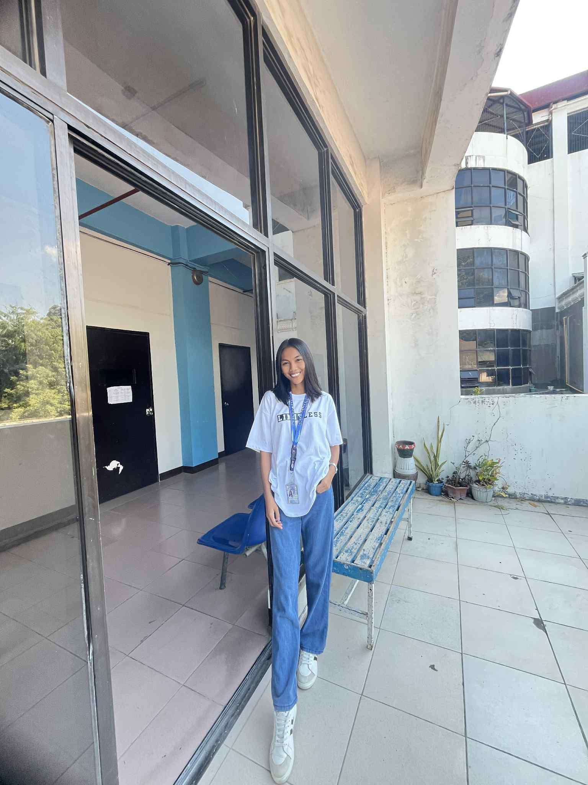
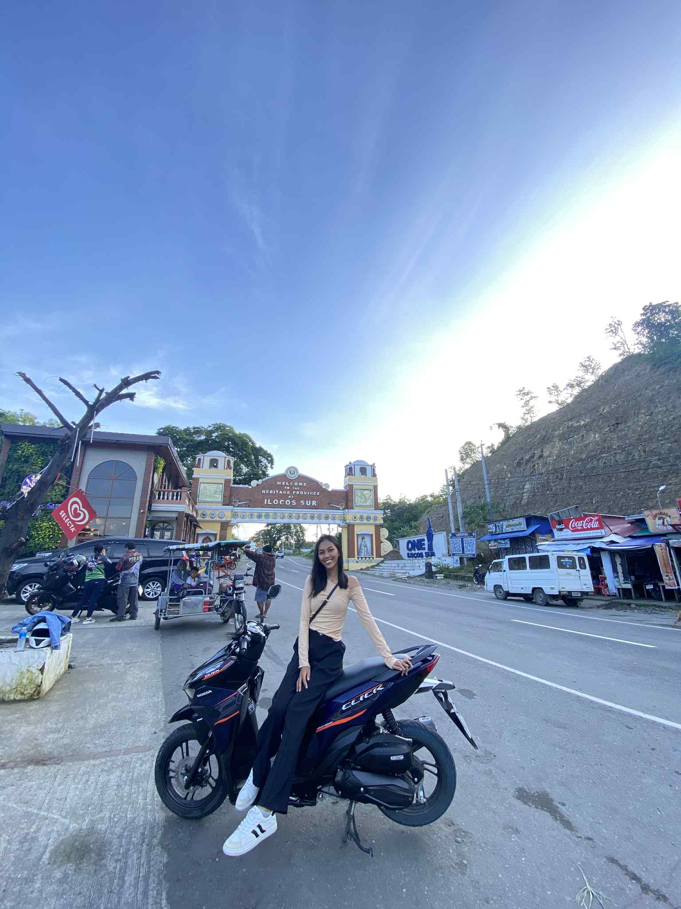

Hello, I'm Joyce Marie B. Antolin
Welcome to my personal webpage. I love creating, designing, and building digital experiences.
Gallery
 Resume
Education
Bachelor of Science in IT – Data Center College of the Phil. (2020-2025)
Experience
- Student Web Developer – DCCP
Skills
- HTML, CSS, JavaScript
- UX Design